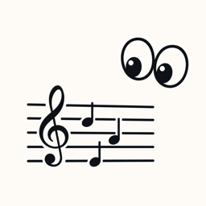

Flexible scores
Choose treble or bass clef, practice groups of one to five notes, and show one or multiple groups per score.

NOTE CRUSHSIGHT-READING, FOCUSED
Note Crush presents clean, customizable note groups for focused piano sight-reading practice—without accounts, ads, or distractions.
PRACTICE YOUR WAY
Choose treble or bass clef, practice groups of one to five notes, and show one or multiple groups per score.
Set independent ranges and key-signature filters for treble and bass clefs.
Use Blink mode to strengthen visual memory, or let optional on-device piano listening advance the score.